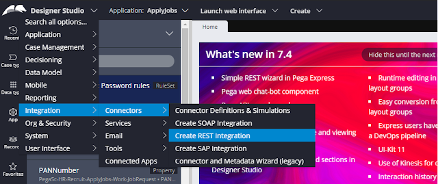
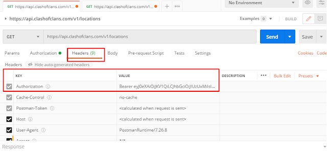
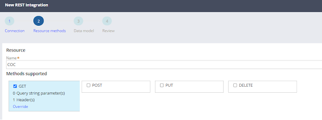
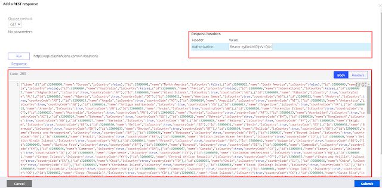
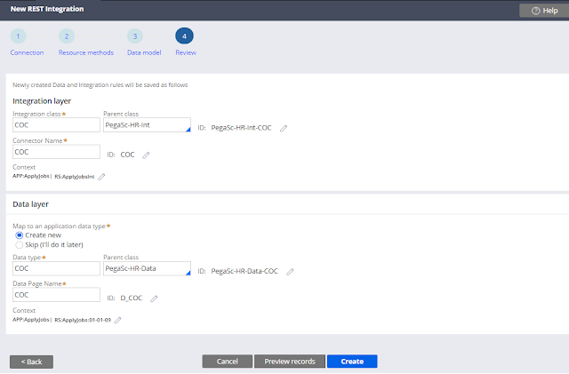

Mapear serviço REST
Para mapear um serviço REST primeiro temos que criar as regras de
integração.
1. Abra o Designer Studio > Integration >
Connectors > Create REST Integration

2. Forneça o nome do serviço e endpoint URL. Se tiver
autenticação separada ou informações no header deve ser
passado.

3. Antes de mapear no Pega deve ser testado no postman.

4. Forneça o nome do recurso e selecione o método (GET,
POST, PUT, DELETE) que deseja usar para esta integração.

5. Temos 2 opções para adicionar o modelo de dados. Você
pode adicionar o request e response do Postman ou apenas o request
e executar (run) para gerar automático o response.

6. Outra tela importante, para montar a estrutura de
classes.
Certifique-se de que, para a camada de integração, a classe Int
esteja selecionada como classe pai e o contexto como conjunto de
regras de integração.
Deve ser definido a classe do Connect REST, nome, application e
ruleset ou versão. Também deve ser definido as mesmas informações
abaixo para o Data Page.

7. Se necessário, visualize os registros e clique em criar.
Veja abaixo a lista de regras que a Pega criou
- Data Page
- Connect Rest
- Classe necessária para integração
- Propriedade necessária para integração
- Data Transform de Response
- Data Transform de Request
8. Logo em seguida pode finalizar chamando o Data Page do
serviço na section, data transform ou activity.
Creating a SOAP service using the Service Wizard
Você executa o Service Wizard para criar todos os registros necessários para expor seu aplicativo como um serviço. O Service Wizard orienta você a inserir as configurações necessárias para criar o serviço. O mesmo não cria mapeamentos XML para propriedades herdadas, portanto, você deve adicionar essas propriedades conforme necessário.
Executando o Service Wizard
1. No Designer Studio, selecione Configure > Integration > Services > Service Wizard para iniciar o Service Wizard.

2. Preencha a sessão Select Service Purpose section:
a. Defina o Service Purpose para
Create and manage work.
b. Defina o Service Type como SOAP.
c. Clique em Next para seguir.

3. Complete a sessão Provide Service Details — Select Work Properties:
a. Defina Work Type com o tipo do case.
b. Defina Flow Type com o tipo do fluxo como
pyStartCase. c. Selecione Create Work e
defina a Organization se desejar.
d. Clique em Next para seguir.